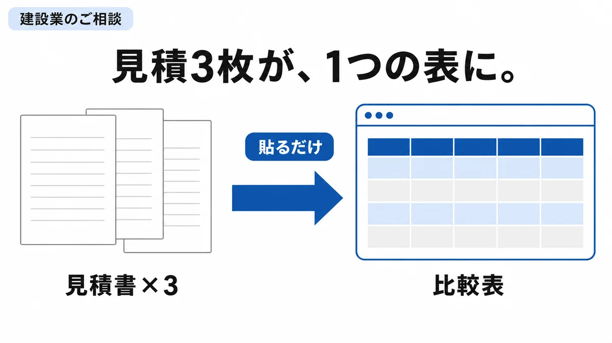
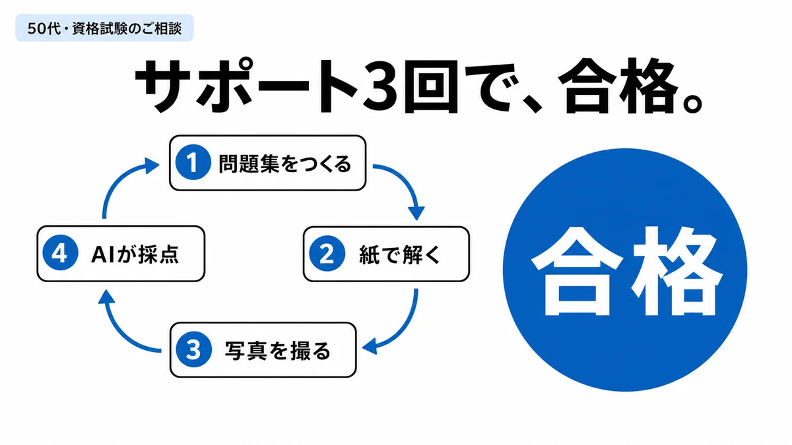
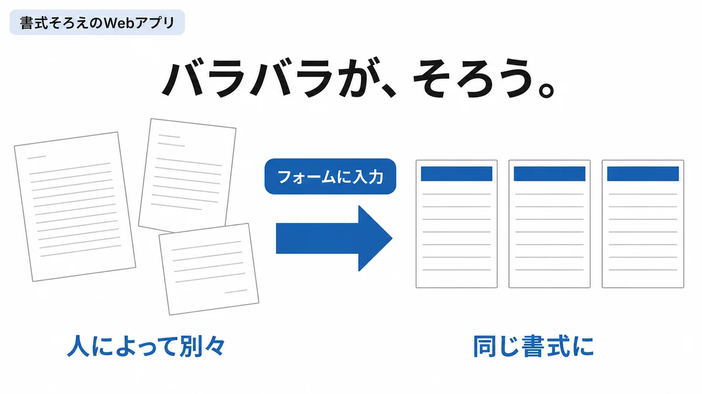

見積3枚が1つの表に
- 困りごと
- 相見積の比較や議事録づくりが、現場仕事のあとの手作業になっていた。
- やったこと
- 見積書を読み取って1つの比較表（スプレッドシート）にするGemと、議事録をつくるGemの作成を支援。Gemini Notebookの使い方もあわせてお伝えした。
- 変わったこと
- 比較資料づくりが「貼って、確認するだけ」に。道具は社内に残り、自分たちで直せます。

ひとつでも当てはまったら、お手伝いできる可能性が高いです。
見積書や書類づくりが、現場仕事のあとの残業になっている
AIやパソコンを入れたけれど、使われないまま置いてある
研修やDXを、相談できる相手が社内にいない
その会社の1つの業務から。大きな導入はしません。
見積書・数字管理のかんたんなExcel、書式をそろえるフォーム、必要なら小さなWebアプリ。作って終わりでなく、使えるまで教えます。
社内研修と、月1〜2回の顧問。ついていけない気がしている方のところにこそ、横に着きます。
資格試験×生成AI。過去問や法令から問題集をつくり、紙で解いて、写真で採点する。勉強の仕組みごとお渡しします。
ホームページなどの制作も承ります。実物＝このサイトと School Stock ↗
すべて実際のご相談です（会社名・お名前は伏せています）



言葉より先に、実物を見てください。すべてクリックでそのまま開きます。
はじめての方も、この3つだけです。

いまのやり方と困りごとを、そのまま。オンラインでも伺います

いちばん効きそうな1つの業務から。大きな導入はしません

研修と伴走で、道具が「置き物」にならないところまで
はい、いまも小学校の教室に立っています。打ち合わせは夕方以降・週末・オンラインで。所属先の規程と手続きを確認のうえ、お受けできるかも含めてお返事します。
内容と回数を伺って、先にお見積りを出します。ご相談とお見積りは無料です。動き始めたあとの追加は、先に合意した分だけです。
福岡・筑豊を中心に、九州内はご相談ください。オンラインだけでも、これまでの支援は成立しています。
そこが本業です。学校で「苦手な人が使えるようになるまで」を10年やってきました。相手が先生でも、農家の方でも、建設業の方でも、やることは同じでした。

「パソコンが苦手」の人が使えるようになるまで教えるのが、学校での本業です。むずかしい言葉を現場の言葉に翻訳して、その人のやり方に合う形で道具を渡す。それを10年やってきました。